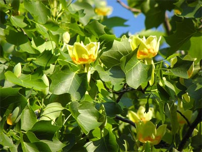

Тюльпановое дерево
В
России недалеко от города Сочи растет уникальное дерево -
лириодендрон тюльпановый из семейства магнолиевых. В природных
условиях обычно растущее на востоке Северной Америки.
Считается национальным символом американских штатов Теннесси,
Кентукки и Индиананы.
В
переводе
с греческого «лирио» - лира, а «дендрон» - дерево. Все
тюльпановое дерево усеяно цветками, напоминающими большие
роскошные бутоны тюльпана.
Средняя высота таких деревьев составляет 25—36 м, а у
отдельных экземпляров, особенно в лесных массивах, нередко
превышает 50 м.
Высота
сочинского дерева составляет более 30 метров, диаметр ствола
более 2,4 метра. Чтобы обхватить тюльпановое дерево,
понадобится не менее 8 взрослых человек.
С
середины мая по июнь тюльпаны на дереве расцветают, а их запах
напоминает аромат шоколада.
Тюльпанное дерево является памятником природы и истории города
Сочи. Рядом с деревом установлена памятная доска, на которой
написано: «Лира Раевского. Охраняется законом. Посадка 1840
года».
По официальной версии считается, что это дерево посадил генерал Николай Раевский в 1840 году, который занимался разведением лириодендронов на побережье черного моря. Однако некоторые биологи утверждают, что дерево значительно старше, что за 175 лет тюльпанное дерево не смогло бы достичь значительных размеров. Ученые считают, что дереву не менее 240 лет, что подтверждается легендами и сказаниями местных жителей. В тюльпановое дерево не раз ударяла молния. На дереве можно увидеть цепь, которая соединяет 2 расколотые части. Но несмотря ни на что, оно по прежнему цветет и радует своей необычайной красотой туристов и местных жителей.